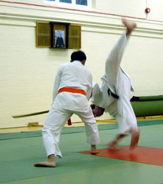

What is Aikido?
Aikido means "The Way of Harmony with the Universal Spirit" meaning that it is a martial art which emphasises harmony or non-resistance with your opponent and ultimately with the laws of nature and the universe.
Aikido is, in name, a modern martial art being derived and developed this century by Morehei Ueshiba, an immensely talented martial artist and deeply spiritual man. However, Aikido is directly related to very ancient forms of Budo (Ways of the Warrior) which Ueshiba developed and adapted into his own system, modern in name but deeply rooted in the wisdom of Japans indigenous religion of Shinto, Zen and in the ways and fighting techniques of the Samurai warrior.
At its most basic level, Aikido is an effective defensive martial art, which utilises the power of the attacker rather than offer resistance. This is accomplished by avoiding and "blending" with an attack whose force is then redirected as necessary to bring about a controlled conclusion. Aikido techniques end generally in either a projection (throw) or with a pin (immobilisation).
"When one disgards strength, one returns to the fundamental principle. If one does not rely on strength but uses ki, the enemy's strength will rebound and he will fall by himself. This is known as winning by using the enemy's strength."
from the Densho Chushaku, an ancient text of the Kito Ryu (jujutsu)
Since no two attacks are identical, the Aikido repertoire has hundreds of techniques in order to deal with every possibility, however these have been distilled down into ten foundation techniques, which form the basics for training purposes. Despite all of these techniques, the true skills, which can only be learned over a long period of time, are connected to timing, control of space, effective use of the unified power of the body (Kokyu Ryoku) and perhaps most important of all maintaining a clear and undisturbed mind under any circumstance (this is the hardest!)
Almost all modernised martial arts such as judo and karate have a strong competitive element within their training regime that prioritises beating your opponent and thus fuelling egotism and disregard for others. Aikido differs in that competition does not take place and instead, uke (attacker) and tori (defender) practice together for mutual benefit, blending together as one. In Aikido the only competition is with the self and the only victory is the subjugation of the ego.
Aikido training also incorporates the use of certain traditional Japanese weapons namely the Bokken (a wooden replica of the Japanese sword), the Jo (a 4ft oak staff) and the Tanto (Japanese dagger), involving both use of the weapon itself and techniques for disarming a weapon carrier.
As well as being a very effective and practical system of self-defence, Aikido offers the practitioner much more; in fact it can be practised purely for such benefits. Central to Aikido is the training of posture; this improves balance and makes for easy elegant movement. Another fundamental is breath control, which has far-reaching effects on the body, both physical and mental. A result of correct breathing and good posture is the development of personal energy or power known in the east as KI or Kokyu, enabling the body to function at levels beyond levels that thought possible. The general conditioning, which is part of a typical session, will also improve general fitness and flexibility. Overall a greater sense of confidence and peace of mind should be the result.
None of the above occurs overnight so be prepared to stick at it long term - There is no short path!!!
Finally, if you seek the spiritual path, Aikido contains in its basic principles a philosophy, which can be applied to all aspects of life - not just the realms of combat.
"The Essence of Aikido, the unity of Ki mind and body must be realised by the whole person.If we grasp it as merely a spiritual reality we fall into abstraction. If we see it only as a matter of technique and physical prowess then we become satisfied with a simplistic explanation of motor movements. The essence encompasses the physical and the spiritual and we must realise it as the Budo unifying Ki mind and body from a philosophical and religious point of view".
The late Doshu Ueshiba Kisshomaru